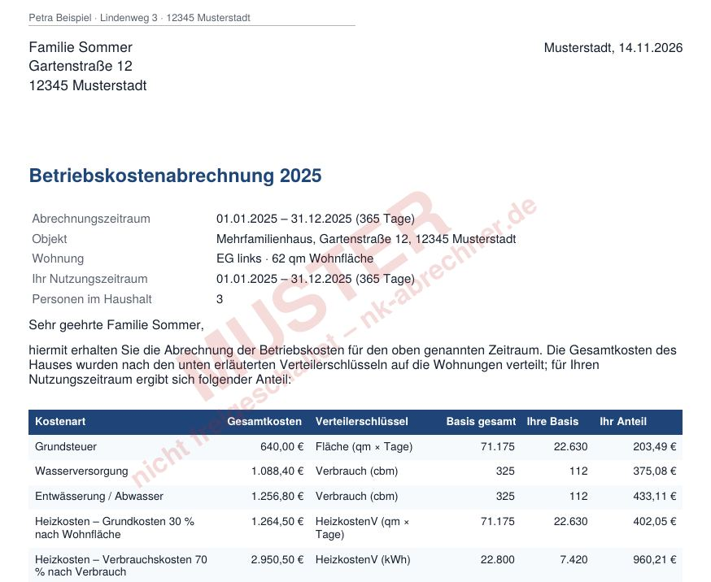

Kosten eintragen, Schlüssel wählen, fertig: Der NK-Abrechner verteilt alles tagesgenau und erstellt für jeden Mieter eine saubere PDF-Abrechnung mit allen formellen Bestandteilen.
Rechnen und Muster-PDF kostenlos · fertige PDFs 14,90 € je Haus und Jahr · kein Abo · keine Anmeldung

Ausschnitt aus dem Muster-PDF (Beispieldaten)
Ein- und Auszug mitten im Jahr? Alles wird tagesgenau aufgeteilt. Leere Tage trägt automatisch der Vermieter.
Wohnfläche, Personen, Wohneinheiten, Verbrauch nach Zählern oder Miteigentumsanteile – je Kostenart frei wählbar.
Grund- und Verbrauchskosten nach Heizkostenverordnung (50–70 %) und die Pflicht-Aufteilung der CO2-Kosten nach Stufenmodell.
Haben Sie Einzelbeträge von Techem, ista & Co., ordnen Sie diese einfach direkt dem jeweiligen Mieter zu.
Die Arbeitskosten für haushaltsnahe Dienstleistungen und Handwerker werden automatisch ausgewiesen.
Eine Gesamtübersicht zeigt, dass jeder Euro verteilt ist – Mieteranteile plus Vermieteranteil ergeben genau die Gesamtkosten.
Wohnungen mit Fläche, Mieter mit Ein-/Auszug, Personen und Vorauszahlung.
Beträge aus Grundsteuerbescheid, Wasser-, Müll- und Versicherungsrechnungen – Schlüssel auswählen.
Ergebnis sofort sehen, Muster prüfen, freischalten und für jeden Mieter das PDF speichern oder drucken.
Für private Vermieter mit einem oder mehreren Häusern bzw. vermieteten Eigentumswohnungen, die ihre Betriebskostenabrechnung selbst machen und keine teure Verwaltungssoftware brauchen.
Umlagefähig sind die Betriebskosten nach § 2 Betriebskostenverordnung (z. B. Grundsteuer, Wasser, Abwasser, Heizung, Müll, Reinigung, Gartenpflege, Allgemeinstrom, Schornsteinfeger, Versicherungen, Hauswart) – sofern sie im Mietvertrag vereinbart sind. Verwaltungs- und Reparaturkosten gehören nicht dazu. Mehr im Ratgeber.
Sie legen für die Wohnung zwei Mieter mit Aus- bzw. Einzugsdatum an. Der Rechner teilt alle Kosten tagesgenau auf; eine Lücke dazwischen wird als Leerstand dem Vermieter zugerechnet. Für den ausgezogenen Mieter können Sie eine neue Anschrift eintragen.
Ja. Wählen Sie bei den Heizkosten „direkt je Mieter“ und tragen Sie die Beträge aus der Messdienst-Abrechnung bei den Mietern ein. Ohne Messdienst verteilt der Rechner die Heizkosten selbst nach Heizkostenverordnung.
Nur in Ihrem Browser auf Ihrem Gerät. Wir sehen keine Mieter- oder Kostendaten. Mit „Daten sichern“ speichern Sie eine Datei, die Sie nächstes Jahr wieder laden können.
Ausprobieren, rechnen und das Muster-PDF (mit Wasserzeichen) sind kostenlos. Für die fertigen PDFs ohne Wasserzeichen zahlen Sie einmalig 14,90 € je Haus (Adresse) und Abrechnungsjahr. Danach können Sie beliebig oft ändern und neu erstellen. Kein Abo.
Nein. Der NK-Abrechner ist ein Rechen- und Formularwerkzeug. Ob eine Kostenart umlagefähig und vereinbart ist, entscheiden Sie anhand Ihres Mietvertrags. Bei Streitfällen hilft z. B. Haus & Grund oder ein Anwalt.